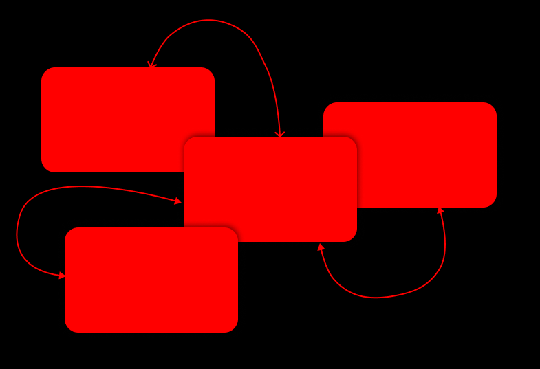
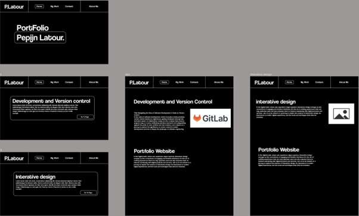
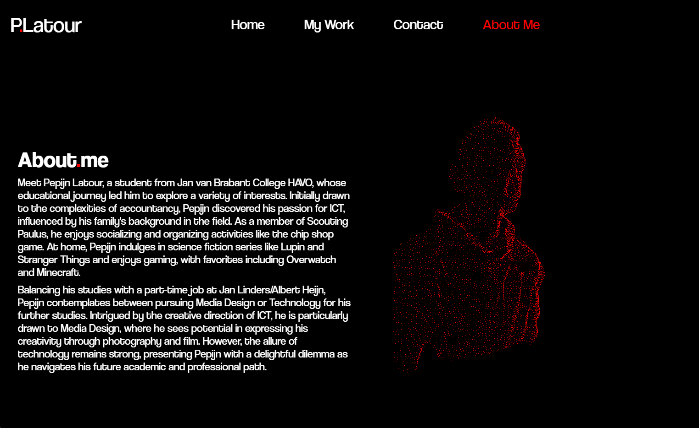

Interactive.Media.Products
For this Learning outcome i made a few designs.
i made a design for my portfolio and for fontys partime ICT.
Both of the design i tested and improved with feedback from the tests.
my portfolio design is maily tested with my teachers and classmates.
For the website of fontys partime ICT i tested it with the target audience for this assignment.

PortFolio.
Prototyping.
I started with the landing page. This will be the peoples first impression of me and my portfolio. And will be most remembered. I started prototyping in Figma with the tile.
and a sans serif font this fits the modern/minimalistic vibe The title Is in a easy to read sans-serif font (coolvetica). I also used it in my logo on the top left. This because it’s a clean an minimalistic font. And I am going to use the Coolvetica Font in the plain text as well.
I made a box around my name to put an emphasis on it. The rectangle makes it more modern because of the clean modern line. I also added the rounded corners this because it goes well with the font I chose. And rounded corners make the design more appealing.
Testing.
After the landing page I started with the rest of the layout
First I had to define my goals.
- I want to show myself in my design.
- I need to organize all my work by the learning outcome
With this in mind i started looking a way of navigating through the learning outcome.
I liked the horizontal scrolling in my inspirations so I wanted to combine it with the clipping scroll of the vertical scrolling page.
So I made 2 examples of the horizontal scrolling. Here I used the rectangle box again to maintain consistency. If you scroll on the page it feels like a slide show.
A slide show in the lay out will enhance the memorability of my portfolio.
As of the topic pages. I chose for no distractions only the text and some images maby play with the positioning of the images and text but the main goal of these pages is to inform/educate the reader and this is best without any distractions.

Improvements.
After the first portfolio review I got some feedback about the design.
To make it more myself and add some elements to make it a bit less boring.
So I added the following elements to my design.
First I added the stickers to enhance the overall uniqueness of my design. These are pictures that represent moments or elements of my life. This way it is more me and a bit less boring.
Also I added a red accent colour to my design. This will make it look more luxurious/modern.
here is a link to my figma design: Figma

3D.Picture
I added a 3D picture of myself to make my design more memorable. It fits well with the overall style, and I've made it red to match my accent color for a striking look.
And to give the design a personal touch. It blends nicely with the page style. I made the model red to match my accent color, making it really stand out.
Fontys.ICT.Part.time
Interview.
The assignment was to create more awwareness for the fontys parttime ICT study.
For this assignment we started with creating questions after that I interviewed a few people from the target audience.
I asked them about their experience with the current website and how they experience the study. Why they chose the study, and how they find this study
Wit the answers of this interview we started the design.